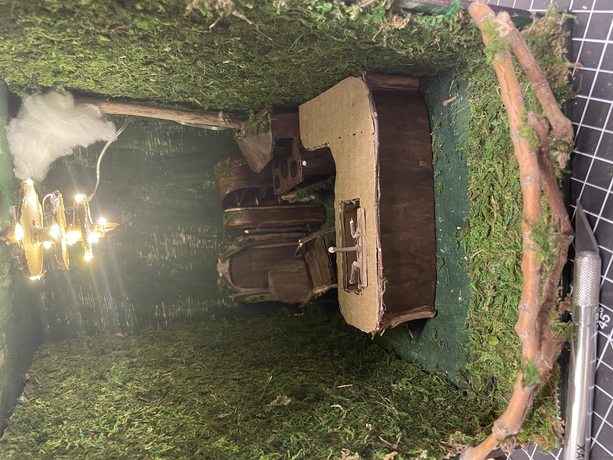

A treehouse cafe: The first floor would be an outdoor entrance and dining area while the second floor would be the kitchen in which the food and drinks were made.
When the first floor was completed it became more of an outdoor dining area with multiple tables, teas, foods, and other cafe accouterments. It was finalized with a clay tree trunk and a resin lake with a mixture of 3D-printed animal guests at their tables enjoying their time. Extra additions that were included are things such as a tree swing, and a picnic area. There is still a small trail leading into the tree as well as some foliage around though the space that was going to hold bushes and other trees was taken up by more dining furniture and such.
The second floor was finalized with an oven and a fridge with a salamander chef seated inside ready to send out any orders that needed to be fulfilled. There is a sink and other kitchen utensils that Mr. Solomon (the salamander) would be using in his kitchen, like spatulas, cups, and plates. There are also mushroom-shaped shelves lining the back wall ready to hold anything that might need to be stored. Another thing that was added later on was a sweet little balcony that guests could use to look out into the forest.
The first materials we wanted to focus on were the materials we wanted to use for our floors, we thought our best step forward was to use wood due to its sturdiness as well as its aesthetic connections to what our plan was for our locker. From there we went on to start trying to determine what we wanted to use for the more intricate pieces of our locker.
We thought that it would be best to 3D print and paint our smaller pieces as we would get better results that way. The furniture also was able to get more detail and look more finely made when they were 3D printed. Though when it came time to go about foliage, nature, and lighting we decided to go a different route. Using resin, clay, fairy light, and bought foliage we then continued to finalize our floors using what we had rather than buying new materials. We also determined that we could get a more realistic look by using real wood from branches outside and the color and texture of cardboard lent us some time in the end with painting
Fall 2022